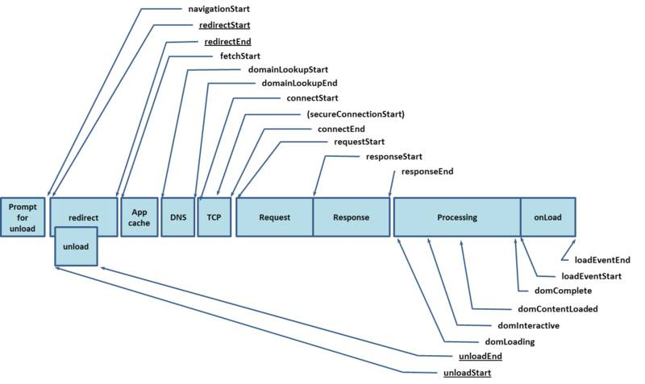
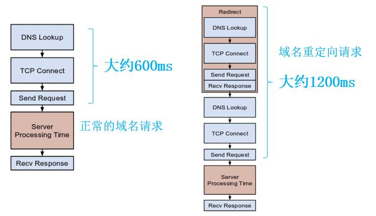
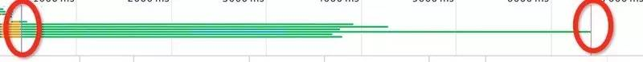

来自：SegmentFault
作者：jimmy_thr
链接：https://segmentfault.com/a/1190000004466407
如果大家想继续看下面的内容的话，有一个要求，就是回答我一个问题:
你这样写过代码吗？
window.onload = function(){
$(".gravatar").on('click',function(){
//...
});
//以及其他操作DOM的节点
}
如果答案是 yes. 那么，bingo, 这里我们将深入讲解，这样写代码到底有没有IQ。
如果答案是 No. 那么，2333333, 你也可以看一下。 万一哪天用上了呢？
可能会有童鞋反问，那么，我改怎么写呢？
没错，这里就是说的就是这个。
使用过jquery的童鞋，应该知道有一个叫做ready的方法.
即:
$(document).ready(function(){
//操作DOM相关
//...
})
那这个和上面的写法有什么区别呢？ 谁比较好一点呢(指性能)？
wait wait wait ~
这问题有点多诶。 不急。 想想看， jquery老大哥 就是帮你 提高性能的，肯定是下面那种好呢。
Why?
原因我们接着说.
页面加载
页面加载就是从你输入网址+enter开始，发生的一些列过程，最终到页面显示。 从微观上分的话，页面加载有两部分
一个是以DOMContentLoaded触发为标志的DOM树的渲染完成
一个是以辅助资源img,font加载完成为触发标志的onload事件
他们两个的具体区别就是"资源的加载"这个关键点.
在获得数据响应后,页面开始解析,发生的过程为:
(1) 解析HTML结构。
(2) 加载外部脚本和样式表文件。
(3) 解析并执行脚本代码。
(4) 构造HTML DOM模型。//ready执行
(5) 加载图片等外部文件。
(6) 页面加载完毕。//load执行
其实，说到这里，这篇文章就已经结束了。
想得美。
这只是，页面加载很浅的一块，前端能在页面加载上做的工作其实超级多。 要知道， 从你输入网站 + enter键后，发生的过程为:
重定向=>检查DNS缓存=> DNS解析 => TCP连接 => 发请求 => 得到响应=> 浏览器处理 => 最后onload
你可以数一数，前文的页面加载和这里的页面加载的范围到底是怎样的一个区别. 也就是说上文的页面加载其实 只算是
浏览器处理=> 最后onload这一过程。 懂吧。 很小很小。
所以，这里我们先从宏观上来讲解一下，页面加载的整个流程.
宏观页面加载
这样，干讲页面加载真的很没趣诶， 又没有吃的，又没有程序员鼓励师，又没有leader的加薪，凭借的是本宝宝的 满腔热情 和 对技术的执着。 感动吧~
开玩笑的， 意淫了之后。我们说正事。
如果我们想深入了解宏观页面加载，需要掌握ECMA5新给出的一个API。 performance . 是不是 感觉很熟悉呢？
performance简单讲解
以前，我们来检查浏览器的时候，大部分情况下是使用
console.time(specialNum);
console.timeEnd(specialNum);
或者
new Date().getTime();
//或者
Date.now();
上面说的两种方法， 获取的精度都是毫秒级(10^-6)，对于一些非常精确的测试，他们的作用来还是蛮有限的，而且获取数据的方式，也比较complicated.
ES5提出的performance可以获取到，微秒级别(10^-9). 而且，能够得到后台事件的更多时间数据。
他的兼容性是IE9+ 。 觉得已经足够了。
performance.timing对象
通常，我们可以从performance.timing对象上，获得我们想要的一切时间值.具体有哪些，我就不赘述了。直接看一张图:

（from Sam Dutton）
比如，我们获得重定向时间用:
var time = performance.timing;
var redirect = time.redirectEnd - time.redirectStart; //单位为微秒
这就已经够我们用的啦。
里面需要进行一点解释
即DOMContentLoaded事件 是在domContentLoaded那段触发的。图中所指的domContentLoaded其实分为两块, 一个是domContentLoadedEventStart和domContentLoadedEventEnd. 详见下述说明:(from 赖小赖小赖)
// 获取 performance 数据
var performance = {
// memory 是非标准属性，只在 Chrome 有
// 财富问题：我有多少内存
memory: {
usedJSHeapSize: 16100000, // JS 对象（包括V8引擎内部对象）占用的内存，一定小于 totalJSHeapSize
totalJSHeapSize: 35100000, // 可使用的内存
jsHeapSizeLimit: 793000000 // 内存大小限制
},
// 哲学问题：我从哪里来？
navigation: {
redirectCount: 0, // 如果有重定向的话，页面通过几次重定向跳转而来
type: 0 // 0 即 TYPE_NAVIGATENEXT 正常进入的页面（非刷新、非重定向等）
// 1 即 TYPE_RELOAD 通过 window.location.reload() 刷新的页面
// 2 即 TYPE_BACK_FORWARD 通过浏览器的前进后退按钮进入的页面（历史记录）
// 255 即 TYPE_UNDEFINED 非以上方式进入的页面
},
timing: {
// 在同一个浏览器上下文中，前一个网页（与当前页面不一定同域）unload 的时间戳，如果无前一个网页 unload ，则与 fetchStart 值相等
navigationStart: 1441112691935,
// 前一个网页（与当前页面同域）unload 的时间戳，如果无前一个网页 unload 或者前一个网页与当前页面不同域，则值为 0
unloadEventStart: 0,
// 和 unloadEventStart 相对应，返回前一个网页 unload 事件绑定的回调函数执行完毕的时间戳
unloadEventEnd: 0,
// 第一个 HTTP 重定向发生时的时间。有跳转且是同域名内的重定向才算，否则值为 0
redirectStart: 0,
// 最后一个 HTTP 重定向完成时的时间。有跳转且是同域名内部的重定向才算，否则值为 0
redirectEnd: 0,
// 浏览器准备好使用 HTTP 请求抓取文档的时间，这发生在检查本地缓存之前
fetchStart: 1441112692155,
// DNS 域名查询开始的时间，如果使用了本地缓存（即无 DNS 查询）或持久连接，则与 fetchStart 值相等
domainLookupStart: 1441112692155,
// DNS 域名查询完成的时间，如果使用了本地缓存（即无 DNS 查询）或持久连接，则与 fetchStart 值相等
domainLookupEnd: 1441112692155,
// HTTP（TCP） 开始建立连接的时间，如果是持久连接，则与 fetchStart 值相等
// 注意如果在传输层发生了错误且重新建立连接，则这里显示的是新建立的连接开始的时间
connectStart: 1441112692155,
// HTTP（TCP） 完成建立连接的时间（完成握手），如果是持久连接，则与 fetchStart 值相等
// 注意如果在传输层发生了错误且重新建立连接，则这里显示的是新建立的连接完成的时间
// 注意这里握手结束，包括安全连接建立完成、SOCKS 授权通过
connectEnd: 1441112692155,
// HTTPS 连接开始的时间，如果不是安全连接，则值为 0
secureConnectionStart: 0,
// HTTP 请求读取真实文档开始的时间（完成建立连接），包括从本地读取缓存
// 连接错误重连时，这里显示的也是新建立连接的时间
requestStart: 1441112692158,
// HTTP 开始接收响应的时间（获取到第一个字节），包括从本地读取缓存
responseStart: 1441112692686,
// HTTP 响应全部接收完成的时间（获取到最后一个字节），包括从本地读取缓存
responseEnd: 1441112692687,
// 开始解析渲染 DOM 树的时间，此时 Document.readyState 变为 loading，并将抛出 readystatechange 相关事件
domLoading: 1441112692690,
// 完成解析 DOM 树的时间，Document.readyState 变为 interactive，并将抛出 readystatechange 相关事件
// 注意只是 DOM 树解析完成，这时候并没有开始加载网页内的资源
domInteractive: 1441112693093,
// DOM 解析完成后，网页内资源加载开始的时间
// 在 DOMContentLoaded 事件抛出前发生
domContentLoadedEventStart: 1441112693093,
// DOM 解析完成后，网页内资源加载完成的时间（如 JS 脚本加载执行完毕）
domContentLoadedEventEnd: 1441112693101,
// DOM 树解析完成，且资源也准备就绪的时间，Document.readyState 变为 complete，并将抛出 readystatechange 相关事件
domComplete: 1441112693214,
// load 事件发送给文档，也即 load 回调函数开始执行的时间
// 注意如果没有绑定 load 事件，值为 0
loadEventStart: 1441112693214,
// load 事件的回调函数执行完毕的时间
loadEventEnd: 1441112693215
}
};
不过performance还有另外一个方法 now
performance.now()
通常，我们会将该方法和Date.now()进行一个对比。
performance.now(); //输出是微秒级别
Date.now(); //输出是毫秒级别
其中Date.now()是输出 从1970年开始的毫秒数.
performance.now()参考的是从.performance.timing.navigationStart(页面开始加载)的时间, 到现在的微秒数.
这里，我们可以使用performance.now()来模拟获取DomContentLoaded的时间。
var timesnipe = performance.now();
document.addEventListener('DOMContentLoaded', function() {
console.log(performance.now() - timesnipe);
}, false);
window.addEventListener('load', function() {
console.log(performance.now() - timesnipe);
}, false);
//但是这样并不等同于,只能算作约等于
performance.timing.domContentLoadedEventStart - performance.timing.domLoading; //检测domLoadEvent触发时间
上面不相等的原因就在于，当执行script的时候，DOM其实已经开始解析DOM和页面内容， 所以会造成时间上 比 真实时间略短。另外performance还有其他几个API,比如makr,getEntries. 不过，这里因为和页面显示的关系不是很大，这里就不做过多的讲解了。 有兴趣，可以参考:赖小赖小赖
接下来，我们一步一步来看一下，页面加载的整个过程.
redirect
这是页面加载的第一步(也有可能没有). 比如，当一个页面已经迁移，但是你输入原来的网站地址的时候就会发生。
或者， 比如example.com -> m.example.com/home 。 这样耗费的时间成本是双倍的。 这里就会经过两次DNS解析，TCP连接，以及请求的发送。所以，在后台设置好正确的网址是很重要的。
如图:

这里，我们可以使用.performance的属性,计算出重定向时间
redirectTime = redirectEnd - redirectStart
接着我们就到了cache,DNS,TCP,Request,以及Response的阶段
cache,DNS,TCP,Request,Response
如果我们的域名输入正确的话，接着，浏览器会查询本地是否有域名缓存(appCache)，如果有，则不需要进行DNS解析，否则需要对域名进行解析，找到真实的IP地址，然后建立3次握手连接， 发送请求， 最后接受数据。 通常，这一部分，可以做的优化有:
发送请求的优化:加异地机房，加CDN.(加快解析request)
请求加载数据的优化:页面内容经过 gzip 压缩，静态资源 css/js 等压缩(request到response的优化)
ok~ 使用performance测试时间为:
// DNS 缓存时间
times.appcache = t.domainLookupStart - t.fetchStart;
// TCP 建立连接完成握手的时间
times.connect = t.connectEnd - t.connectStart;
//DNS 查询时间
times.lookupDomain = t.domainLookupEnd - t.domainLookupStart;
//整个解析时间
var lookup = t.responseEnd - t.fetchStart;
其实，只要对照那个图查查over，不用太关注上面的式子。使用时需要注意，performance的相关操作，最好放在onload的回调中执行，避免出现异常的bug.
process,onload
这里的过程其实就和开头的时候说的一样
(1) 解析HTML结构。
(2) 加载外部脚本和样式表文件。
(3) 解析并执行脚本代码。
(4) 构造HTML DOM模型。//ready执行
(5) 加载图片等外部文件。
(6) 页面加载完毕。//load执行
ok~ 这里，我们来计算一下时间:
上performance
//计算DOMContentLoaded触发时间
var contentLoadedTime = t.domContentLoadedEventStart-t.domLoading
//计算load触发时间
var loadTime = t.domComplete - t.domLoading;
更直观的，我们可以在Chrome的developer工具的network选项里面得到我们想要的答案.

这两个线，分别代表的是DOMContentLoaded和onload触发的时间。 这也更能直观的看出，DOMContentLoaded事件比onload事件先触发吧。现在回到我们开头的那个问题。我们到底该将代码写在什么地方呢？
这里，这个问题就很好回答了。如果你的js文件涉及DOM操作，可以直接在DOMContentLoaded里面添加回调函数，或者说基本上我们的js文件都可以写在里面进行调用. 其实，这和我们将js文件放在body底部，在js上面加async,defer,以及hard Callback异步加载js文件的效果是一样一样的。
上面一部分我有篇文章已经介绍过了，所以这里就不赘述了。
接下来我们要做的最后一件事，就是看看jquery老大哥，他的ready事件的原理到底是什么.
jquery ready事件浅析
jquery主要做的工作就是兼容IE6,7,8实现DOMContentLoaded的效果.由于现在主流只要兼容到IE8, 剩下IE6,7我们不做过多的分析了。
目前流行的做法有两种， 一种是使用readystatechange实现，另外一种使用IE自带的doScroll方法实现.
readyStateChange
这其实是IE6，7，8的特有属性，用它来标识某个元素的加载状态。 但是现在w3c规定，只有xhr才有这个事件。 所以，这里，我们一般只能在IE中使用readyStateChange否则，其他浏览器是没有效果的。
详见:readyState兼容性分析
这样，我们模拟jquery的ready事件时就可以使用:
document.onreadystatechange = function () {
if (document.readyState == "interactive" || document.readyState == "complete") {
//添加回调...
}
}
理想很丰满，现实很骨感。 事实上, 当readyState为interactive时， Dom的结构并未完全稳定，如果还有其他脚本影响DOM时, 这时候可能会造成bug。 另外为complete时， 这时候图片等相关资源已经加载完成。 这个时候模拟触发DOMContentLoaded事件，其实和onload事件触发时间并没有太久的时间距离。 这种方式兼容低版本IE还是不太可靠的。
另外提供一个doScroll方式
doScroll兼容
这是IE低版本特有的，不过IE11已经弃用了。 使用scrollLeft和scrollTop代替. doScroll 的主要作用是检测DOM结构是否问题， 通常我们会使用轮询来检测doScroll是否可用，当可用的时候一定是DOM结构稳定，图片资源还未加载的时候。
我们来看一下jquery中实现doScroll的兼容:
//低版本的IE浏览器，这里添加监听作为向下兼容，如果doScroll执行出现bug，也能保证ready函数的执行
document.attachEvent( "onreadystatechange", DOMContentLoaded );
window.attachEvent( "onload", jQuery.ready );
//在ready里面会对执行做判断，确保只执行一次
var top = false;
// 如果是IE且不是iframe就通过不停的检查doScroll来判断dom结构是否ready
try {
top = window.frameElement == null && document.documentElement;
} catch(e) {}
if ( top && top.doScroll ) {
(function doScrollCheck() {
if ( !jQuery.isReady ) {//ready方法没有执行过
try {
// 检查是否可以向左scroll滑动,当dom结构还没有解析完成时会抛出异常
top.doScroll("left");
} catch(e) {
//递归调用,直到当dom结构解析完成
return setTimeout( doScrollCheck, 50 );
}
//没有发现异常,表示dom结构解析完成,删除之前绑定的onreadystatechange事件
//执行jQuery的ready方法
jQuery.ready();
}
})();
}
//看看jQuery.ready()方法:
ready:function(wait) {
if (wait === true ? --jQuery.readyWait : jQuery.isReady) {
//判断页面是否已完成加载并且是否已经执行ready方法
//通过isReady状态进行判断, 保证只执行一次
return;
}
if (!document.body) {
return setTimeout(jQuery.ready);
}
jQuery.isReady = true; //指示ready方法已被执行
//这也是上面两次绑定事件的原因,会保证只执行一次
if (wait !== true && --jQuery.readyWait > 0) {
return;
}
//以下是处理ready的状态
readyList.resolveWith(document, [jQuery]);
if (jQuery.fn.trigger) {
//解除引用
jQuery(document).trigger("ready").off("ready");
}
}
以上就是jquery 兼容ready的方法。
ending~
●本文编号94，以后想阅读这篇文章直接输入94即可。
●输入m可以获取到文章目录

更多推荐请看《15个技术类公众微信》
涵盖：程序人生、算法与数据结构、黑客技术与网络安全、大数据技术、前端开发、Java、Python、Web开发、安卓开发、iOS开发、C/C++、.NET、Linux、数据库、运维等。传播计算机学习经验、推荐计算机优秀资源：点击前往《值得关注的15个技术类微信公众号》
点击阅读原文，了解野狗
![]()